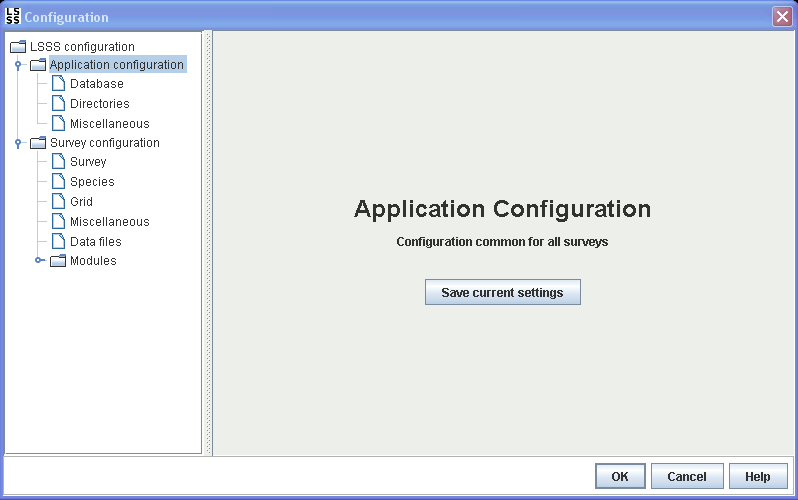

The application configuration is common for all surveys. This configuration is stored in one file that is shared across all surveys. The current settings are stored to that file when storing a survey, and can also be saved from the application configuration main tab.